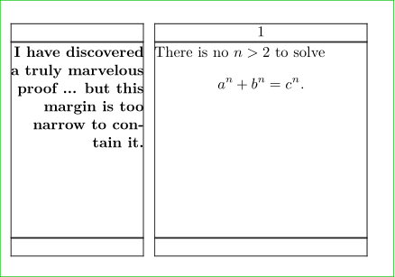
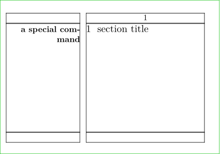

Contents
Summary
The instances of \margindata are used for placing fragments outside of the regular running text.
Instances
| \inleftmargin | defined as \definemargindata[inleftmargin][left][margin=margin,width=\leftmarginwidth,style=,color=] |
| \inrightmargin | defined as \definemargindata[inrightmargin][right][margin=margin,width=\rightmarginwidth,style=,color=] |
| \inoutermargin | defined as \definemargindata[inoutermargin][outer][margin=margin,width=\outermarginwidth,style=,color=] |
| \ininnermargin | defined as \definemargindata[ininnermargin][inner][margin=margin,width=\innermarginwidth,style=,color=] |
| \inleftedge | defined as \definemargindata[inleftedge][left][margin=edge,width=\leftedgewidth,style=,color=,category=edge] |
| \inrightedge | defined as \definemargindata[inrightedge][right][margin=edge,width=\rightedgewidth,style=,color=,category=edge] |
| \inouteredge | defined as \definemargindata[inouteredge][outer][margin=edge,width=\outeredgewidth,style=,color=,category=edge] |
| \ininneredge | defined as \definemargindata[ininneredge][inner][margin=edge,width=\inneredgewidth,style=,color=,category=edge] |
| \atleftmargin | defined as \definemargindata[atleftmargin][left][margin=normal,width=\leftmarginwidth,style=,color=] |
| \atrightmargin | defined as \definemargindata[atrightmargin][right][margin=normal,width=\rightmarginwidth,style=,color=] |
| \inleft | defined as \definemargindata[inleft][left][margin=margin,width=\leftmarginwidth,align=flushright] |
| \inright | defined as \definemargindata[inright][right][margin=margin,width=\rightmarginwidth,align=flushleft] |
| \inouter | defined as \definemargindata[inouter][outer][margin=margin,width=\outermarginwidth,align=inner] |
| \ininner | defined as \definemargindata[ininner][inner][margin=margin,width=\innermarginwidth,align=outer] |
| \inmargin | defined as \definemargindata[inmargin][left][margin=margin,width=\leftmarginwidth,align=flushright] |
| \inother | defined as \definemargindata[inother][right][margin=margin,width=\rightmarginwidth,align=flushleft] |
| \margintext | defined as \definemargindata[margintext][left][margin=margin,width=\leftmarginwidth,align=flushright,stack=yes] |
Settings instance
| \MARGINDATA[...=...,...][...=...,...]{...} | |
| reference | reference |
| ...=...,... | inherits from \setupmargindata |
| ...=...,... | inherits from \setupmarginframed |
| {...} | content |
Description
Place a paragraph in the margin or edge region.
Examples
Example 1
\inmargin{\externalfigure [hass23g] [width=\marginwidth]}
margintext example
-
\setuppapersize[A8,landscape][A8,landscape] \setuplayout[leftmargin=2.5cm, leftmargindistance=0.2cm, backspace=2.9cm, width=4cm, rightmargin=0cm] \showframe \starttext \margintext{I have discovered a truly marvelous proof ... but this margin is too narrow to contain it.} There is no \math{n > 2} to solve \startformula a^n + b^n = c^n. \stopformula \stoptext
- 
Use in titles
Hans wrote that "using inmargin inside a title is sort of unpredictable" and that for titles \margintitle is the way to go.
| Bug report: margintitle is currently undocumented, which is why its example is included here. (See: Bug List) |
-
\setuppapersize[A8,landscape][A8,landscape] \setuplayout[leftmargin=2.5cm, leftmargindistance=0.2cm, backspace=2.9cm, width=4cm, rightmargin=0cm] \showframe \starttext \margintitle{a special command} \section{section title} \stoptext
- 
Notes
In MkII \setupmargindata was called \setupinmargin
See also
Help from ConTeXt-Mailinglist/Forum
All issues with:
- \inleftmargin on the mailing list (all results)
- \inleftmargin on the mailing list (subject only)
- \inleftmargin on stack exchange
- \inleftmargin in ConTeXt's source
- \inrightmargin on the mailing list (all results)
- \inrightmargin on the mailing list (subject only)
- \inrightmargin on stack exchange
- \inrightmargin in ConTeXt's source
- \inoutermargin on the mailing list (all results)
- \inoutermargin on the mailing list (subject only)
- \inoutermargin on stack exchange
- \inoutermargin in ConTeXt's source
- \ininnermargin on the mailing list (all results)
- \ininnermargin on the mailing list (subject only)
- \ininnermargin on stack exchange
- \ininnermargin in ConTeXt's source
- \inleftedge on the mailing list (all results)
- \inleftedge on the mailing list (subject only)
- \inleftedge on stack exchange
- \inleftedge in ConTeXt's source
- \inrightedge on the mailing list (all results)
- \inrightedge on the mailing list (subject only)
- \inrightedge on stack exchange
- \inrightedge in ConTeXt's source
- \inouteredge on the mailing list (all results)
- \inouteredge on the mailing list (subject only)
- \inouteredge on stack exchange
- \inouteredge in ConTeXt's source
- \ininneredge on the mailing list (all results)
- \ininneredge on the mailing list (subject only)
- \ininneredge on stack exchange
- \ininneredge in ConTeXt's source
- \atleftmargin on the mailing list (all results)
- \atleftmargin on the mailing list (subject only)
- \atleftmargin on stack exchange
- \atleftmargin in ConTeXt's source
- \atrightmargin on the mailing list (all results)
- \atrightmargin on the mailing list (subject only)
- \atrightmargin on stack exchange
- \atrightmargin in ConTeXt's source
- \inleft on the mailing list (all results)
- \inleft on the mailing list (subject only)
- \inleft on stack exchange
- \inleft in ConTeXt's source
- \inright on the mailing list (all results)
- \inright on the mailing list (subject only)
- \inright on stack exchange
- \inright in ConTeXt's source
- \inouter on the mailing list (all results)
- \inouter on the mailing list (subject only)
- \inouter on stack exchange
- \inouter in ConTeXt's source
- \ininner on the mailing list (all results)
- \ininner on the mailing list (subject only)
- \ininner on stack exchange
- \ininner in ConTeXt's source
- \inmargin on the mailing list (all results)
- \inmargin on the mailing list (subject only)
- \inmargin on stack exchange
- \inmargin in ConTeXt's source